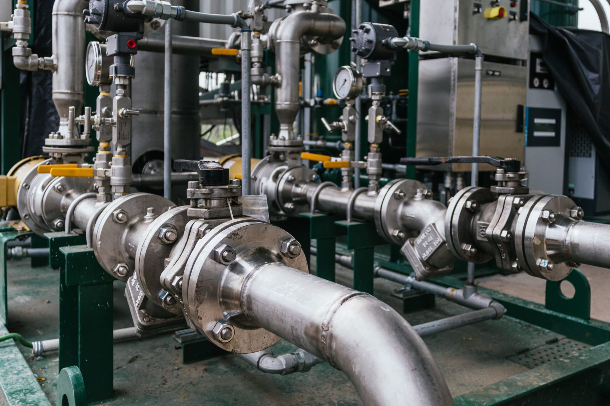
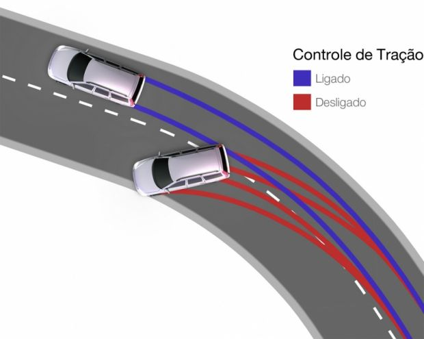
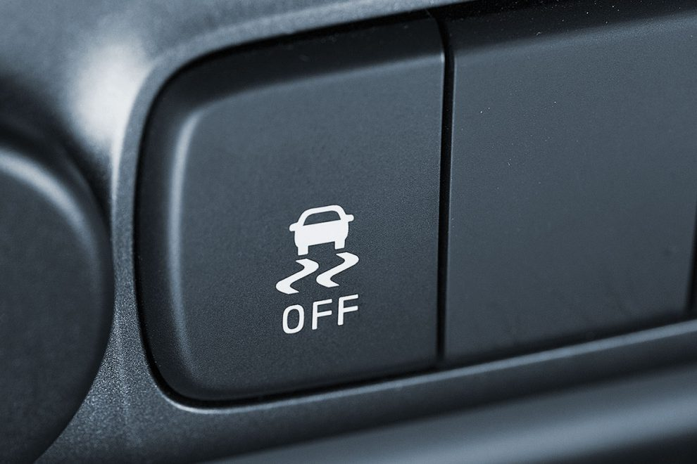
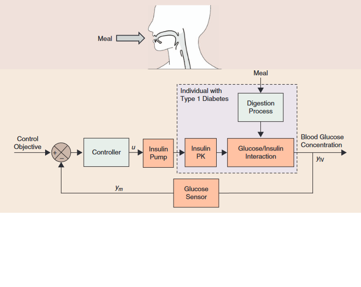
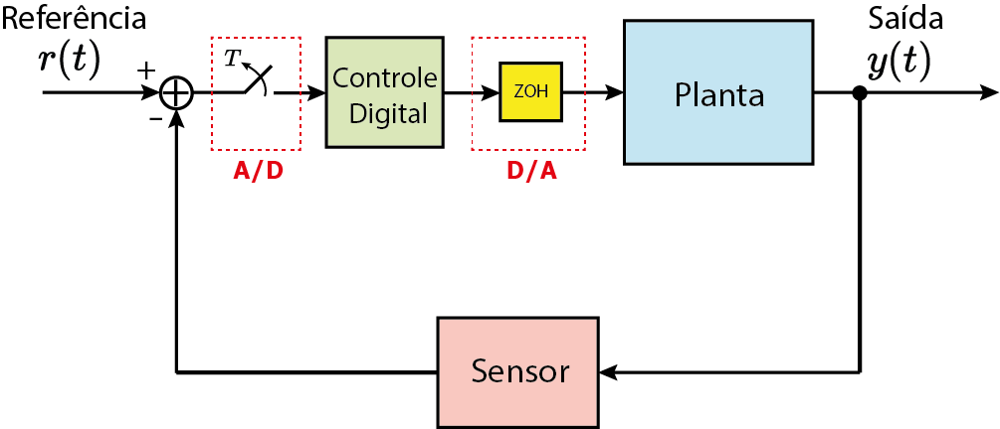
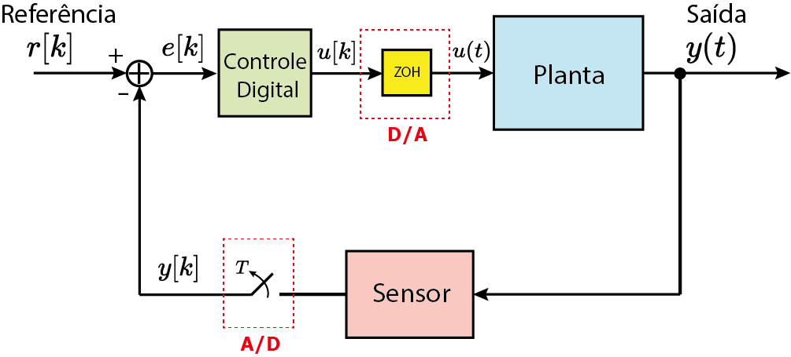
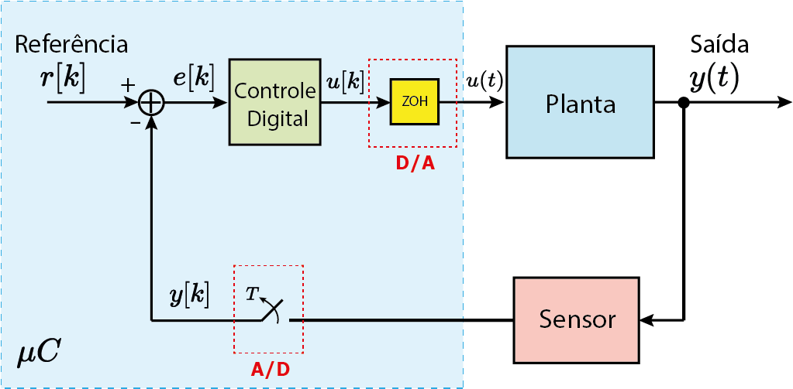
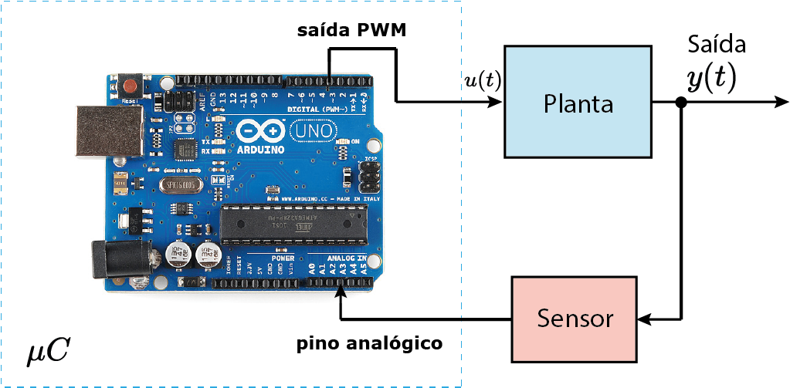
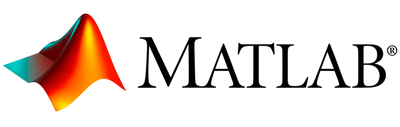

Aula 1:
Introdução à disciplina de Controle Digital
SEL0359
8 de agosto de 2024
O que é um sistema de controle?

Garantir desempenho e segurança!
Naves espaciais e aviões
 |
Ex: controle de atitude
Rocket Landing System
Geração de energia
Ex: controle de potência gerada
Indústria
|  |
Ex: controle de temperatura, vazão, nível...
Setor automotivo
|  Fonte: https://salaodocarro.com.br/como-funciona/controle-de-tracao.html |  |
Medicina (Ex: Controle de Diabetes)

Biologia (Ex: Controle de Populações)

Tomada de decisão no Mercado financeiro e Economia


Processo pode ser físico ou não-físico.
Pêndulo Invertido:
https://www.youtube.com/watch?v=4kIrcELC79o
Pêndulo Invertido:
https://www.youtube.com/watch?v=4kIrcELC79o

Pêndulo Invertido:
https://www.youtube.com/watch?v=4kIrcELC79o

Pêndulo Invertido:
https://www.youtube.com/watch?v=4kIrcELC79o

Self-balanced robot:
https://www.youtube.com/watch?v=38KVxZnBDZc
Self-balanced robot:
https://www.youtube.com/watch?v=38KVxZnBDZc

Self-balanced robot:
https://www.youtube.com/watch?v=38KVxZnBDZc

Self-balanced robot:
https://www.youtube.com/watch?v=38KVxZnBDZc

Self-balanced robot:
https://www.youtube.com/watch?v=38KVxZnBDZc

Self-balanced robot:
https://www.youtube.com/watch?v=38KVxZnBDZc


Obter Equações Diferênciais que descrevam a planta:
$$\sum_{n=0}^N \alpha_n\frac{d^n y}{dt^n}=\sum_{m=0}^M \beta_m\frac{d^m u}{dt^m}$$

Interface analógica/digital

Interface analógica/digital

Interface analógica/digital

Interface analógica/digital



Transformada Z
$$X(z)=\sum_{k=-\infty}^\infty x[k]z^{-k}$$
- Simulações computacionais;
